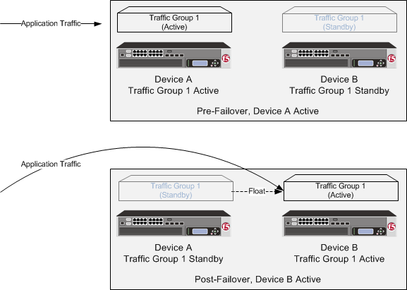

Updated Date: 07/07/2026
Creating an Active-Standby Configuration using the Configuration Utility
The most common TMOS® device service clustering (DSC®) implementation is an active-standby configuration, where a single traffic group is active on one of the devices in the device group and is in a standby state on all other peer devices. If failover occurs, the standby traffic group on one of the peer devices becomes active and begins processing the application traffic.
To implement this DSC implementation, you can create a Sync-Failover device group. A Sync-Failover device group with two or more members and one traffic group provides configuration synchronization and device failover, and optionally, connection mirroring.
If the device with the active traffic group goes offline, the traffic group becomes active on a peer device, and application processing is handled by that device.

The way you configure device service clustering () (also known as redundancy) on a VIPRION system varies depending on whether the system is provisioned to run the vCMP feature.
For a device group that consists of VIPRION systems that are not licensed and provisioned for vCMP, each VIPRION cluster constitutes an individual device group member. The following table describes the IP addresses that you must specify when configuring redundancy.
|
Feature |
IP addresses required |
|---|---|
|
Device trust |
A primary floating management IP address (IPv4 or IPv6) for the VIPRION cluster. |
|
ConfigSync |
The unicast non-floating self IP address assigned to VLAN |
|
Failover |
|
|
Connection mirroring |
For the primary address, the non-floating self IP address that you assigned to VLAN |
On a vCMP system, the devices in a device group are virtual devices, known as vCMP guests. You configure device trust, config sync, failover, and mirroring to occur between equivalent vCMP guests in separate chassis.
For example, if you have a pair of VIPRION systems running vCMP, and each system has three vCMP guests, you can create a separate device group for each pair of equivalent guests. Table 4.2 shows an example.
|
Device groups for vCMP |
Device group members |
|---|---|
|
|
|
|
|
|
|
|
|
By isolating guests into separate device groups, you ensure that each guest synchronizes and fails over to its equivalent guest. The following table describes the IP addresses that you must specify when configuring redundancy.
|
Feature |
IP addresses required |
|---|---|
|
Device trust |
A cluster management IP address (IPv4 or IPv6) of the guest. |
|
ConfigSync |
The non-floating self IP address on the guest that is associated with VLAN |
|
Failover |
|
|
Connection mirroring |
For the primary address, the non-floating self IP address on the guest that is associated with VLAN |
Before you set up device service clustering (DSC®), you must configure these BIG-IP® components on each device that you intend to include in the device group.
|
Configuration component |
Considerations |
|---|---|
|
Hardware, licensing, and provisioning |
Devices in a device group must match with respect to product licensing and module provisioning. Heterogeneous hardware platforms within a device group are supported. |
|
BIG-IP software version |
Each device should be running BIG-IP version 12.x or higher. This ensures successful configuration synchronization. |
|
Management IP addresses |
Each device must have at least one management IP address (IPv4, IPv6, or both), a network mask, and a management route defined. |
|
FQDN |
Each device must have a fully-qualified domain name (FQDN) as its host name. |
|
User name and password |
Each device must have a user name and password defined on it that you will use when logging in to the BIG-IP Configuration utility. |
|
|
The platform properties for the |
|
VLANs |
You must create these VLANs on each device, if you have not already done so:- A VLAN for the internal network, named
|
|
Self IP addresses |
You must create these self IP addresses on each device, if you have not already done so:- Two self IP addresses (floating and non-floating) on the same subnet for VLAN
Note: When you create floating self IP addresses, the BIG-IP system automatically adds them to the default floating traffic group, Important: If the BIG-IP device you are configuring is accessed using Amazon Web Services, then the IP address you specify must be the floating IP address for high availability fast failover that you configured for the EC2 instance. |
|
Port lockdown |
For self IP addresses that you create on each device, you should verify that the Port Lockdown setting is set to Allow All, All Default, or Allow Custom. Do not specify None. |
|
Application-related objects |
You must create any virtual IP addresses and optionally, SNAT translation addresses, as part of the local traffic configuration. You must also configure any iApps application services if they are required for your application. When you create these addresses or services, the objects automatically become members of the default traffic group, |
|
Time synchronization |
The times set by the NTP service on all devices must be synchronized. This is a requirement for configuration synchronization to operate successfully. |
|
Device certificates |
Verify that each device includes an x509 device certificate. Devices with device certificates can authenticate and therefore trust one another, which is a prerequisite for device-to-device communication and data exchange. |
|
Switchboard failsafe |
If your devices are provisioned for vCMP® and your guests are members of a device group, make sure the guests’ switchboard failsafe setting is set to the default value. Any change from the default switchboard failsafe configuration must always be done on the vCMP host, and not on the guests. |
Before configuring the config sync address, verify that all devices in the device group are running the same version of BIG-IP system software.
You perform this task to specify the IP address on the local device that other devices in the device group will use to synchronize their configuration objects to the local device.
Note: You must perform this task locally on each device in the device group.
-
Confirm that you are logged in to the device you want to configure.
-
On the Main tab, click Device Management > Devices.
This displays a list of device objects discovered by the local device.
-
In the Name column, click the name of the device to which you are currently logged in.
-
Near the top of the screen, click ConfigSync.
-
From the Local Address list, retain the displayed IP address or select another address from the list.
F5 Networks recommends that you use the default value, which is the self IP address for the internal VLAN. This address must be a non-floating (static) self IP address and not a management IP address.
Important: If the BIG-IP device you are configuring is accessed using Amazon Web Services, then the internal self IP address that you select must be an internal private IP address that you configured for this EC2 instance as the Local Address.
-
Click Update.
After performing this task, the other devices in the device group can synchronize their configurations to the local device whenever a sync operation is initiated.
You can specify the local self IP address that you want other devices in a device group to use when mirroring their connections to this device. Connection mirroring ensures that in-process connections for an active traffic group are not dropped when failover occurs. You typically perform this task when you initially set up device service clustering (DSC).
When performing this task, make sure you consider the following:
- You must perform this task locally on each device in the device group.
- Connection mirroring only functions between devices with identical hardware platforms.
- For the VLAN associated with the self IP address that you specify for connection mirroring, make sure that the VLAN’s CMP Hash setting is set to the default value. Otherwise, the system cannot establish the HA connection.
-
Confirm that you are logged in to the device you want to configure.
-
On the Main tab, click Device Management > Devices.
This displays a list of device objects discovered by the local device.
-
In the Name column, click the name of the device to which you are currently logged in.
-
Near the top of the screen, click Mirroring.
-
For the Primary Local Mirror Address setting, retain the displayed IP address or select another address from the list.
The recommended IP address is the self IP address for VLAN
HA. You can also use VLANinternal.Important: If the BIG-IP device you are configuring is accessed using Amazon Web Services, then the self IP address you specify must be one of the private IP addresses that you configured for this EC2 instance as the Primary Local Mirror Address.
-
For the Secondary Local Mirror Address setting, retain the default value of None, or select an address from the list.
This setting is optional. The system uses the selected IP address in the event that the primary mirroring address becomes unavailable.
-
Click Update.
In addition to specifying an IP address for mirroring, you must also enable connection mirroring on the relevant virtual servers on this device.
Before you begin this task, verify that:
- Each BIG-IP device that is to be part of the local trust domain has a device certificate installed on it.
- The local device is designated as a certificate signing authority.
You perform this task to establish trust among devices on one or more network segments. Devices that trust each other constitute the local trust domain. A device must be a member of the local trust domain prior to joining a device group.
By default, the BIG-IP software includes a local trust domain with one member, which is the local device. You can choose any one of the BIG-IP devices slated for a device group and log into that device to add other devices to the local trust domain. For example, devices Bigip_1, Bigip_2, and Bigip_3 each initially shows only itself as a member of the local trust domain. To configure the local trust domain to include all three devices, you can simply log into device Bigip_1 and add devices Bigip_2 and Bigip_3 to the local trust domain; there is no need to repeat this process on devices Bigip_2 and Bigip_3.
-
On the Main tab, click Device Management > Device Trust > Device Trust Members.
-
Click Add.
-
From the Device Type list, select Peer or Subordinate.
-
Type a device IP address, administrator user name, and administrator password for the remote BIG-IP device with which you want to establish trust. The IP address you specify depends on the type of BIG-IP device:
- If the BIG-IP device is an appliance, type a management IP address (IPv4 or IPv6) for the device.
- If the BIG-IP device is a VIPRION device that is not licensed and provisioned for vCMP, type a primary cluster management IP address (IPv4 or IPv6) for the cluster.
- If the BIG-IP device is a VIPRION device that is licensed and provisioned for vCMP, then type a cluster management IP address (IPv4 or IPv6) for the guest.
- If the BIG-IP device is an Amazon Web Services EC2 device, type one of the Private IP addresses created for this EC2 instance.
-
Click Retrieve Device Information.
-
Verify that the certificate of the remote device is correct, and then click Device Certificate Matches.
-
In the Name field, verify that the name of the remote device is correct.
-
Click Add Device.
After you perform this task, the local device is now a member of the local trust domain. Also, the BIG-IP system automatically creates a special Sync-Only device group for the purpose of synchronizing trust information among the devices in the local trust domain, on an ongoing basis.
Repeat this task to specify each device that you want to add to the local trust domain.
This task establishes failover capability between two or more BIG-IP devices. If an active device in a Sync-Failover device group becomes unavailable, the configuration objects fail over to another member of the device group and traffic processing is unaffected. You perform this task on any one of the authority devices within the local trust domain.
Repeat this task for each Sync-Failover device group that you want to create for your network configuration.
-
On the Main tab, click Device Management > Device Groups.
-
On the Device Groups list screen, click Create.
The New Device Group screen opens.
-
In the Name field, type a name for the device group.
-
From the Group Type list, select Sync-Failover.
-
In the Description field, type a description of the device group.
This setting is optional.
-
From the Configuration list, select Advanced.
-
For the Members setting, select a host name from the Available list for each BIG-IP device that you want to include in the device group, including the local device. Use the Move button to move the host name to the Includes list.
The Available list shows any devices that are members of the device’s local trust domain but not currently members of a Sync-Failover device group. A device can be a member of one Sync-Failover group only. Also, for vCMP-provisioned systems on platforms that contain a hardware security module (HSM) supporting FIPS multi-tenancy, the FIPS partitions on the guests in the device group must be identical with respect to the number of SSL cores allocated to the guest’s FIPS partition and the maximum number of private SSL keys that the guest can store on the HSM.
-
From the Sync Type list:
- Select Automatic with Incremental Sync when you want the BIG-IP system to automatically sync the most recent BIG-IP configuration changes from a device to the other members of the device group. In this case, the BIG-IP system syncs the configuration data whenever the data changes on any device in the device group.
- Select Manual with Incremental Sync when you want to manually initiate a config sync operation. In this case, the BIG-IP system syncs the latest BIG-IP configuration changes from the device you choose to the other members of the device group. We strongly recommend that you perform a config sync operation whenever configuration data changes on one of the devices in the device group.
- Select Manual with Full Sync when you want to manually initiate a config sync operation. In this case, the BIG-IP system syncs the full set of BIG-IP configuration data from the device you choose to the other members of the device group. We strongly recommend that you perform a config sync operation whenever configuration data changes on one of the devices in the device group.
-
In the Maximum Incremental Sync Size (KB) field, retain the default value of
1024, or type a different value.This value specifies the total size of configuration changes that can reside in the incremental sync cache. If the total size of the configuration changes in the cache exceeds the specified value, the BIG-IP system performs a full sync whenever the next config sync operation occurs.
-
For the Network Failover setting, select or clear the check box:
- Select the check box if you want device group members to handle failover communications by way of network connectivity. This is the default value and is required for active-active configurations.
- Clear the check box if you want device group members to handle failover communications by way of serial cable (hard-wired) connectivity. For active-active configurations, you must select network failover, as opposed to serial-cable (hard-wired) connectivity.
-
In the Link Down Time on Failover field, use the default value of
0.0, or specify a new value.This setting specifies the amount of time, in seconds, that interfaces for any external VLANs are down when a traffic group fails over and goes to the standby state. Specifying a value other than
0.0for this setting causes other vendor switches to use the specified time to learn the MAC address of the newly-active device.Important: This setting is a system-wide setting, and does not apply to this device group only. Specifying a value in this field causes the BIG-IP system to assign this value to the global bigdb variable failover.standby.linkdowntime.
-
Click Finished.
Before you sync the configuration, verify that the devices targeted for config sync are members of a device group and that device trust is established.
This task synchronizes the BIG-IP configuration data from the local device to the devices in the device group. This synchronization ensures that devices in the device group operate properly. When synchronizing self IP addresses, the BIG-IP system synchronizes floating self IP addresses only.
Important: You perform this task on either of the two devices, but not both.
-
On the Main tab, click Device Management > Overview.
-
In the Device Groups area of the screen, click the arrow next to the name of the relevant device group.
The screen expands to show a summary and details of the sync status of the selected device group, as well as a list of the individual devices within the device group.
-
In the Devices area of the screen, choose the device that shows a sync status of
Changes Pending. -
In the Sync Options area of the screen, select Push the selected device configuration to the group.
-
Click Sync.
The BIG-IP system syncs the configuration data of the selected device to the other members of the device group.
You perform this task to specify the local IP addresses that you want other devices in the device group to use for continuous health-assessment communication with the local device. You must perform this task locally on each device in the device group.
Note: The IP addresses that you specify must belong to route domain 0.
-
Confirm that you are logged in to the device you want to configure.
-
On the Main tab, click Device Management > Devices.
This displays a list of device objects discovered by the local device.
-
In the Name column, click the name of the device to which you are currently logged in.
-
Near the top of the screen, click Failover Network.
-
Click Add.
-
From the Address list, select an IP address.
The unicast IP address you select depends on the type of device:
Platform Action Appliance without vCMP Select a static self IP address associated with a VLAN on the internal network (preferably VLAN HA) and the static management IP address or addresses currently assigned to the device. If the system is configured with both IPv4 and IPv6 management IP addresses, then by default, the system will use either of these addresses for failover communication if needed, for failover communication between devices.Appliance with vCMP Select a static self IP address associated with a VLAN on the internal network (preferably VLAN HA) and the unique management IP address currently assigned to the guest. If a guest is configured with both IPv4 and IPv6 cluster management IP addresses, then by default, the system will use either of these addresses for failover communication if needed, for failover communication between devices.VIPRION without vCMP Select a static self IP address associated with a VLAN on the internal network (preferably VLAN HA). If you choose to select unicast addresses only (and not a multicast address), you must also specify the existing per-slot static management IP address or addresses (IPv4, IPv6, or both) that you previously configured for each slot in the cluster. If you choose to select one or more unicast addresses and a multicast address, then you do not need to select the existing per-slot, static management IP addresses when configuring addresses for failover communication.VIPRION with vCMP On the vCMP host, select a self IP address that is defined on the guest and associated with a VLAN on the internal network (preferably VLAN HA). If you choose to select unicast failover addresses only (and not a multicast address), you must also select the existing per-slot virtual static management IP address or addresses (IPv4, IPv6, or both) that you previously configured for each slot in the guest’s virtual cluster. If you choose to select one or more unicast addresses and a multicast address, you do not need to select the existing per-slot virtual static, management IP addresses when configuring addresses for failover communication.Important: Failover addresses should always be static, not floating, IP addresses.
-
From the Port list, select a port number.
We recommend using port 1026 for failover communication.
-
To enable the use of a failover multicast address on a VIPRION platform (recommended), then for the Use Failover Multicast Address setting, select the Enabled check box.
-
If you enabled Use Failover Multicast Address, either accept the default Address and Port values, or specify values appropriate for the device.
If you revise the default Address and Port values, but then decide to revert to the default values, click Reset Defaults.
-
Click Finished.
After you perform this task, other devices in the device group can send failover messages to the local device using the specified IP addresses.
Before you sync the configuration, verify that the devices targeted for config sync are members of a device group and that device trust is established.
This task synchronizes the BIG-IP configuration data from the local device to the devices in the device group. This synchronization ensures that devices in the device group operate properly. When synchronizing self IP addresses, the BIG-IP system synchronizes floating self IP addresses only.
Important: You perform this task on either of the two devices, but not both.
-
On the Main tab, click Device Management > Overview.
-
In the Device Groups area of the screen, click the arrow next to the name of the relevant device group.
The screen expands to show a summary and details of the sync status of the selected device group, as well as a list of the individual devices within the device group.
-
In the Devices area of the screen, choose the device that shows a sync status of
Changes Pending. -
In the Sync Options area of the screen, select Push the selected device configuration to the group.
-
Click Sync.
The BIG-IP system syncs the configuration data of the selected device to the other members of the device group.